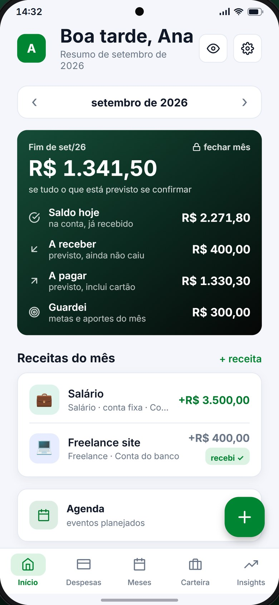
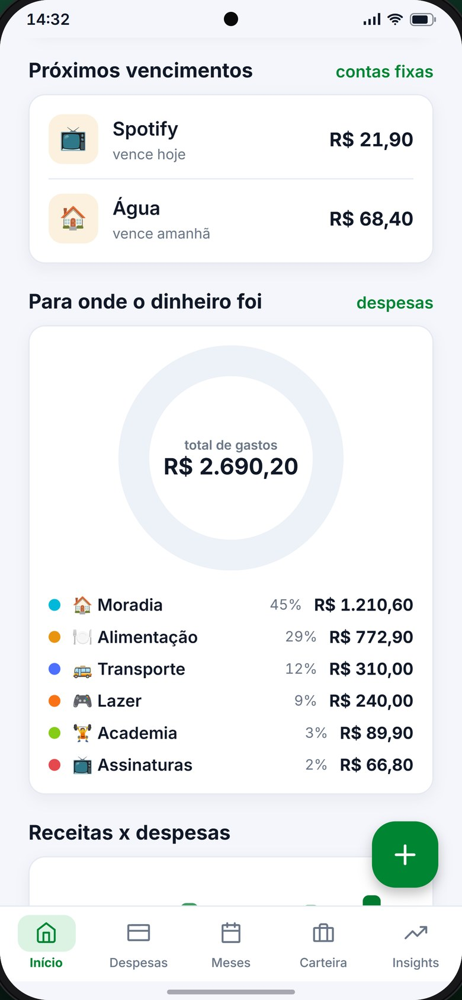
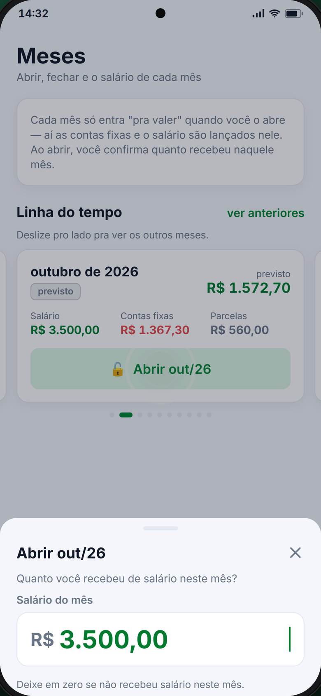
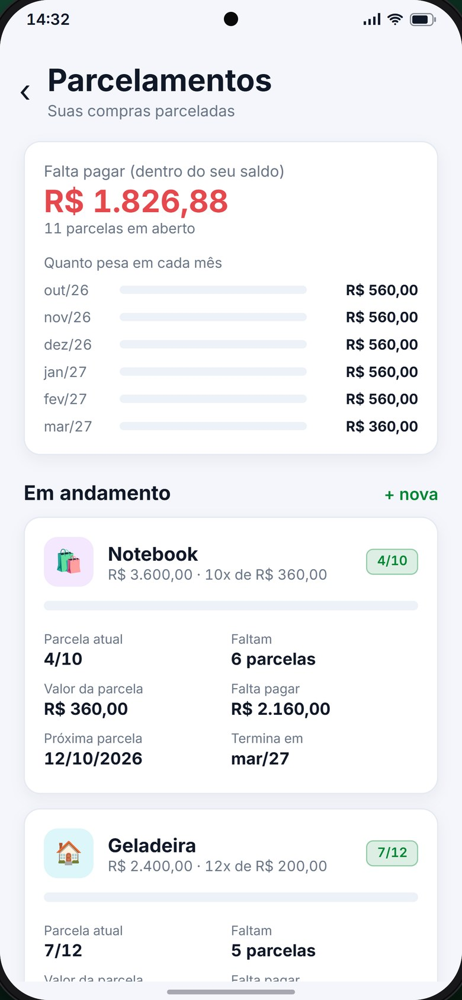
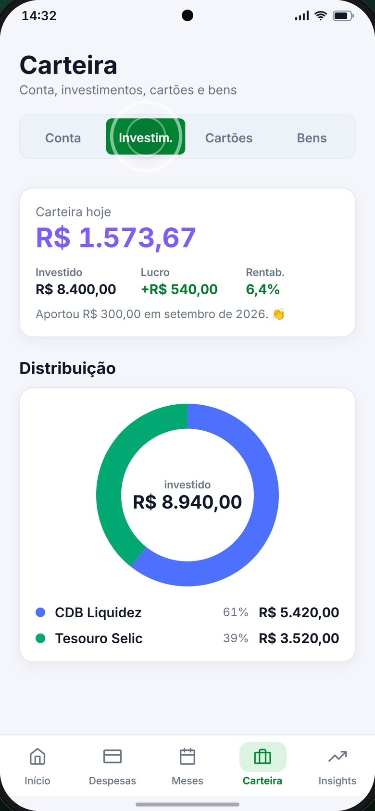
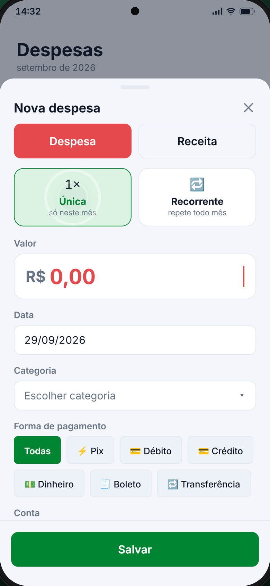
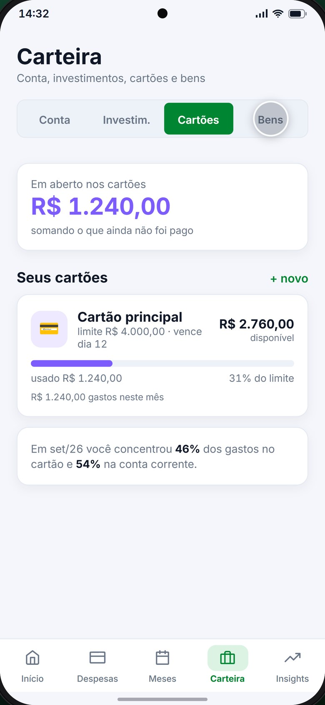
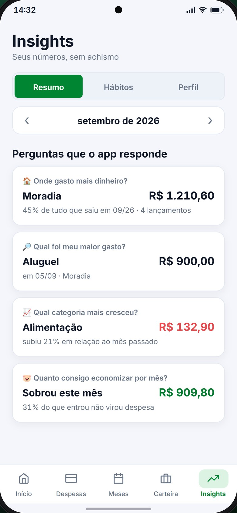
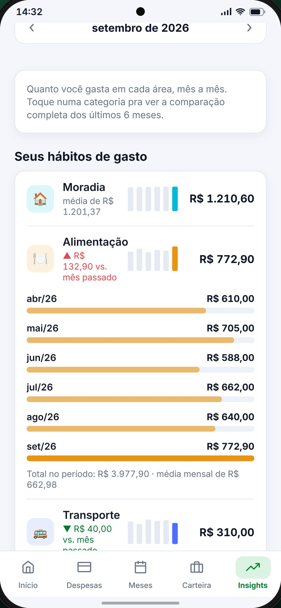

O Meu Bolso é feito para quem quer entender o próprio dinheiro, não só anotar gastos. Você lança, ele mostra para onde tudo foi e o que isso significa.

Um passeio rápido pelo app: lançar um gasto, abrir o mês, acompanhar parcelas e entender para onde o dinheiro vai.
Três passos, sem planilha e sem configuração complicada.
Toque no +, digite o valor como na caixa do mercado (os números entram pela direita), escolha a categoria e pronto.
Ao abrir um mês, suas contas fixas e o salário viram lançamentos previstos. Você só confirma o que foi pago.
Em vez de só gráficos, o app mostra o resultado do mês em destaque: quanto entrou, quanto saiu e quanto sobrou.
Cada gasto tem categoria e subcategoria. Os relatórios separam o essencial do resto e comparam conta e cartão.

É a ideia central do app. Um mês fechado mostra só a previsão; ao abrir, aluguel, internet e salário viram lançamentos que você confirma um a um.

Cadastrou uma compra em 10x? O app cria as 10 parcelas, uma em cada mês, e mostra quanto do limite do cartão já está comprometido.

Contas, investimentos e bens num lugar só. O app separa o que está disponível do que está guardado.

Cada relatório responde uma pergunta que você realmente faz.
O resultado do mês (receitas − despesas − guardado) fica em destaque na tela inicial.
Ranking por categoria, com a parte essencial separada do que é opcional.
Agenda de contas e eventos, com valor planejado × gasto real.
Limite, uso e disponível de cada cartão, mês a mês.
Saldo, metas e investimentos somados no patrimônio.
Contas fixas mensais e anuais, cada uma no seu dia.
Prints reais do Meu Bolso, com dados fictícios.




Não existe servidor, cadastro nem nuvem. Tudo é guardado num banco SQLite dentro do seu celular, e o app funciona sem internet. Quer mais uma camada? Dá para proteger a abertura com bloqueio.
Disponível para Android, em APK. Instale, abra o mês e comece pelo primeiro lançamento.